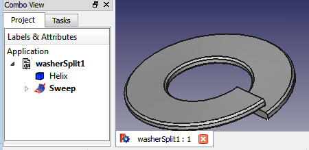
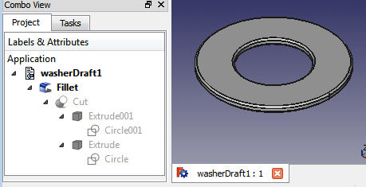
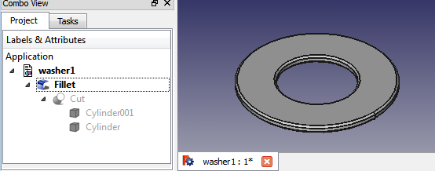
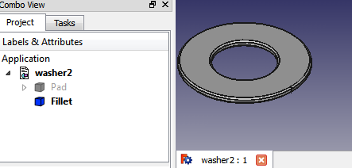
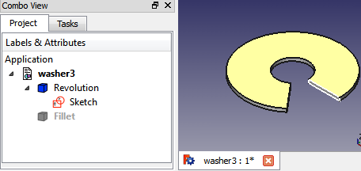
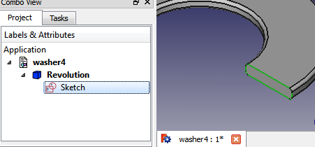
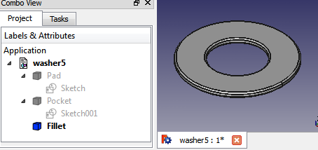
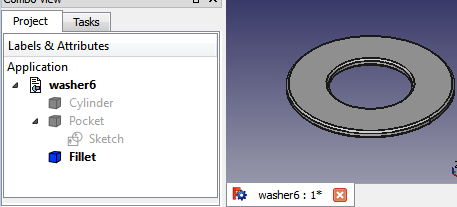

Some way to create a washer
Comparison of some workflows to create a simple washer with FreeCAD.
You can create many other workflows.
| Version | workflow | move the washer, placement | change the shape | note |
|---|---|---|---|---|
| washer1 | Part->Cut(cylinder001-cylinder)
Part->Fillet |
Can be moved Fillet, Cylinder001 and Cylinder | Edit Cylinder001 and Cylinder | If it is moved only Cylinder001 or Cylinder you create an eccentric washer |
| washer2 | Sketcher->Create a new
PartDesign->Pad(sketch) PartDesign->Fillet |
placement is greyed out, to move the washer move the sketch | to change the shape simply edit the sketch | |
| washer3 | Sketcher->Create a new
PartDesign->Revolve(sketch) PartDesign->Fillet |
move the sketch | to change the shape simply edit the sketch | allows you to easily create portions of washers |
| washer4
|
Sketcher->Create a new
PartDesign->Revolve(sketch) |
move the sketch | to change the shape simply edit the sketch | as washer3 but with the fillets included in the sketch |
| washer5 | PartDesign->Cylinder)
Sketcher->Create a new PartDesign->Pocket(sketch) PartDesign->Fillet |
placement greyed out, to move the washer move the sketch | edit Cylinder or edit sketch | move sketch001 does not change anything (automatic reset), you must edit the sketch |
| washer6 | PartDesign->Cylinder
Sketcher->Create a new PartDesign->Pocket(sketch) PartDesign->Fillet |
placement greyed out, to move the washer move the sketch | edit Cylinder or edit sketch | move sketch does not change anything, you must edit the sketch |

{kind=link}
{kind=link}
{kind=link}
{kind=link}
{kind=link}
{kind=link}
....... to be continued .......
Other
Split washer 
Using Draft 
{kind=link}
{kind=link}
     